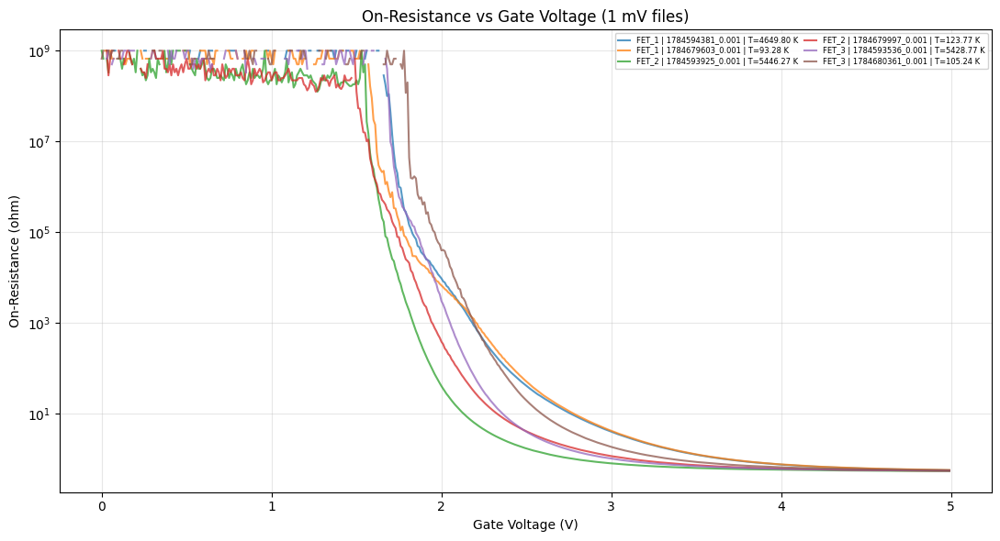
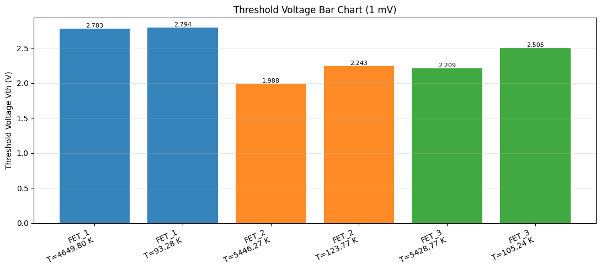
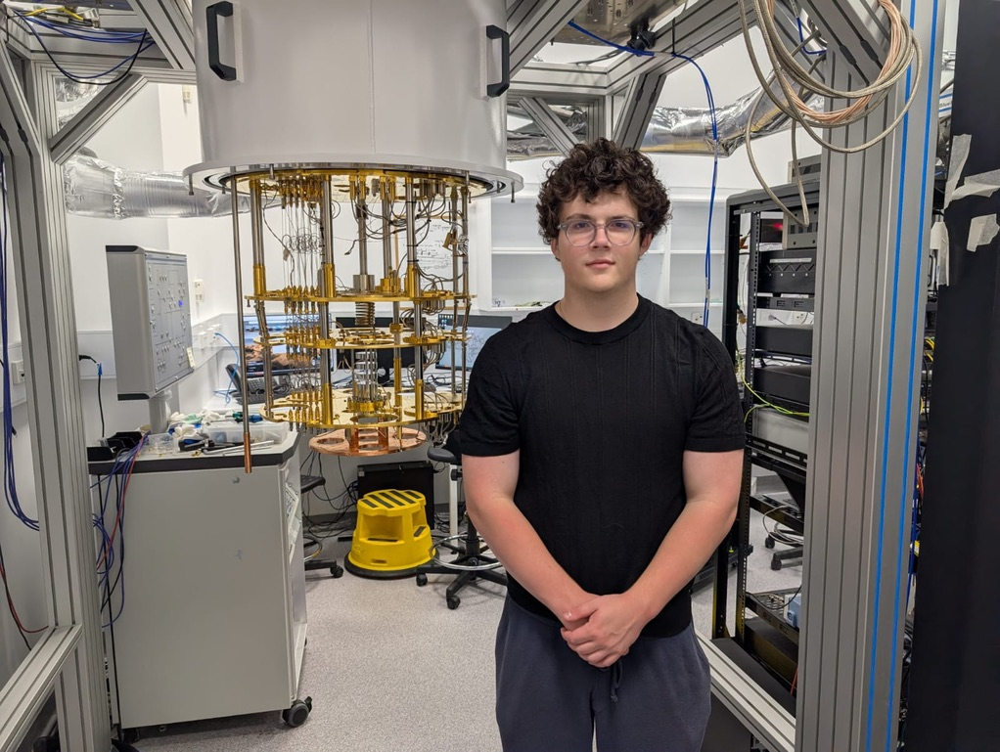

About This Project
I completed an on-site internship at Emergence Quantum, a quantum computing company based in Sydney, Australia. During the internship, I worked in the company's cryogenics lab at the University of Sydney, where I shadowed postdoctoral researcher Dr Steven Waddy and gained hands-on exposure to the science behind dilution refrigerators.
My work focused on measuring and characterizing exotic-material transistors at millikelvin temperatures. This required carefully checking device behavior from the experimental measurements and generating plots to communicate the results.
The experience gave me new insight into the hardware behind quantum computing. Having primarily worked on the software side, I gained an even greater appreciation for the research, precision, and collaboration required to advance the field. I am grateful to Dr Waddy, the University of Sydney cryogenics lab, and the Emergence Quantum team for their guidance and welcome throughout my time in Sydney.
Measurement Plots


Internship Photo
